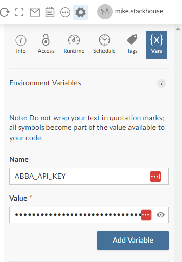
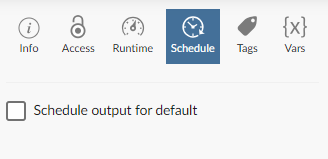
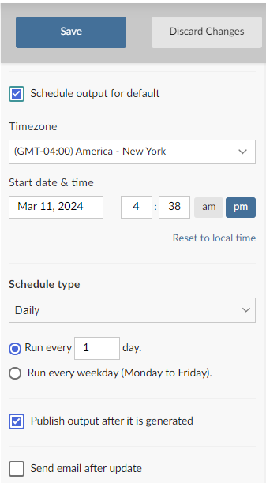

Kubernetes Batch Jobs
k8s_batch_job.Rmd
library(abba)If you’re an end user simply trying to run your work using abba, then this vignette is for you.
Our ultimate goal with abba is to make it as simple as possible for a user to user to do what they need to do. In doing so, there are a handful of methods to interact with the abba API. These methods do the work of submitting a job, waiting for it to complete, and collecting the log output.
End User Facing Functions
The abba end user methods all follow the naming
convention abba_.
| Function | Description |
|---|---|
abba_submit_job() |
Submit a job to the abba API |
abba_submit_and_get_log() |
Submit a job to the abba API, wait for completion, and return the job log |
abba_wait_for_job_log() |
Continue polling until the job log is available |
abba_get_job_log() |
Retrieve a job log |
abba_get_job_status() |
Retrieve a job status |
As a user, this gives you some distinct control over your own workflow - whether you want to submit the job and handle it later with some of the other specific methods, or simply submit the job and hold the console until the job completes. The internals of each of these methods handle interaction with the API to ensure that HTTP requests don’t time out. Note the the methods do have their own configurable timeout limit..
Create a Scheduled Batch File
A key reason that we created abba was to allow users to take advantage of submitting jobs through Connect. A key benefit of this is Connect’s ability to run reports on a set schedule, be it nightly or at whatever interval you need. abba leverages this capability and provides the extra component of sending your work out to a designated environment. We do this by using R Markdown reports, for which Connect has that scheduling capability.
Batch files can be created using the function
create_batch_job().
create_batch_job()
# Job file created at ./job.RmdThis creates a template R Markdown file with an example call to abba ready to go.
abba::abba_submit_and_get_log(
"/path/to/file.R",
container = "<container_image_name>"
)There are some considerations for you should make when in your job submission:
- The file path must be visible to you as a user.
- Make sure the job has enough resources to execute by using the
cpu_limitandmemory_limitarguments. Memory limits should be specified in Megabyte, so for example, a 4GB session would be listed as'4000M'. - The timeout limits defaults to 10 minutes. If your job will likely
run longer than 10 minutes, increase this using the
timeout_secondsargument. - Make sure you specify the appropriate container. This should likely match whatever you’re already using within Posit Workbench.
A user’s home directory is mounted to the container automatically,
but if you’re referencing data outside of your home directory then you
may have to add that path to the mount parameter. This
needs to follow a specific structure to tell the container how the drive
should be mounted. For example:
list(
volumes=list(
list(name='mount1', nfs=list(
server='0.0.0.0',
path='/mnt/remote/mount1')
)
),
volumeMounts=list(
list(name='mount1', mountPath='/mnt/local/mount1')
)
)
)In this example, the volumes element references the
physical server that needs to be mounted, and the targeted folder from
the server that is being mounted. The volumeMounts element
indicates the path that will be present locally within the container
session. This example represents a standard NFS mount. More complex
mount types, such as SMB, are not supported at this time.
Deployment Prep
Before you deploy to connect, you’ll need to make sure that you have a Posit Connect API key. Note that you’ll need at least a role of Publisher to do this (and to actually deploy to Connect itself). You can do this by following the instructions in the Posit Connect documentation.
With that in place, make sure you test our your job locally before deploying to connect. To do this, you’ll need the abba API URL hosted in your environment, which you can get from your Posit support team (or by looking through content visible to you on Posit Connect).
To test the job, we recommend setting two environment variables, as you’ll be configuring these once deployed to connect:
-
ABBA_API_ADDRESS, set to the URL of the abba API in your environment -
ABBA_API_KEY, set to the key you retrieved from Posit Connect. Make sure you keep this key secure.
You can set these locally as follows:
Sys.setenv(
ABBA_API_ADDRESS = "https://your-connect-server.com/abba_apo",
ABBA_API_KEY = "<your API key>"
)Once set, knit the R Markdown file to make sure it executes.
Deploy a Batch File to Connect
Now you can deploy your job to Posit Connect. This can be done following a standard R Markdown deployment process, either using the publish button within the RStudio IDE, or using git backed content if you’d like to follow a more controlled deployment process.
Once the Markdown file is in connect, you’ll need to set the environment variables we specified above within the deployed environment.

Once you the environment variables are configured, you can hit the refresh button (visible in the screenshot above) to rerun the Markdown job and make sure it works.Schedule Your Cron Job
Once your job is executing successfully, you can configure the run schedule. To do this, go to the Schedule tab of the deployed Markdown file on Connect.

Click the “Schedule output for default” box and then fill out the rest of the form:
